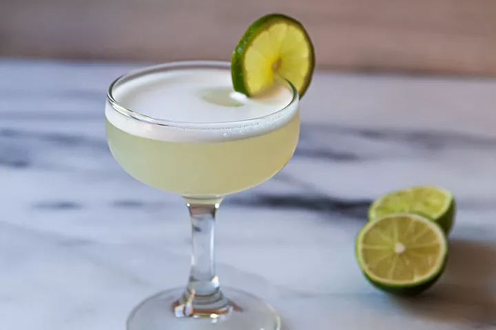

Gimlet Cocktail

Description:
A classic gimlet doesn’t require much: gin (or vodka, if you must), lime, and simple syrup. That’s it! It’s a perfectly balanced gin sour that’s equally appropriate for a dinner party or a casual night at home.
Ingredients:
- 50ml lime syrup or lime cordial
- ice
- 50ml Sipsmith Gin
- slice of lime and an edible flower, to garnish
Steps:
- Put a martini or coupe glass in the fridge to chill.
- Pour 50ml of the lime syrup or cordial into a jug or tall glass and add a few ice cubes and the gin. Stir until the outside of the container feels very cold.
- Strain the mixture into your chilled glass and garnish with a slice of lime and an edible flower.